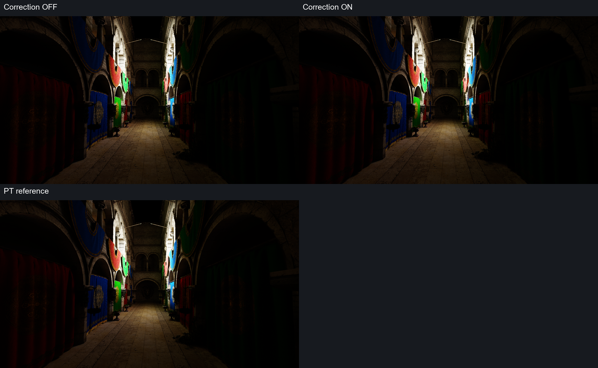

验证结论：本场景 DDGI＋FG 新旧 MSE 的巨大差异可由主命中法线修正开关复现。开启组与上一轮新实验图像完全相同；关闭组恢复旧实验的 MSE 水平，且与旧 EXR 的图像差异很小。这里验证的是 DDGI＋FG，不是 WorldCache 的独立 A/B。
仅切换 RTXGIDDGI.primaryShadingNormalCorrection。两组 GBuffer.adjustShadingNormals 都为 true；已逐像素验证 GBuffer 法线完全相同，重建输入保持一致。关闭组在主命中材质实例中不传 AdjustShadingNormal，复现旧版 DDGI/FG 的策略。探针和次级命中材质策略不变，PT reference 不变。
1920×1080，SponzaLambert，相同固定相机、点光源、官方 22³ 探针、全量更新、256 rays/probe、hysteresis 0.97。两组各新建图与场景，运行同样数量的帧、相同采样序列起点，预热 8192 帧后 Accumulate 累积 32768 帧；半分辨率 FG 固定左上采样。WRC、ReSTIR、NRD、RTXDI 关闭。参考为之前同一张 131072 spp PT，MSE 使用相同可见表面 mask，HDR-FLIP 使用相同曝光范围、ACES、PPD 67。
| 法线修正 | MSE 对 PT | HDR-FLIP | 与旧版 65536 帧图像的 MSE | 16384→32768 MSE 变化 |
|---|---|---|---|---|
| on | 7.52902151e-05 | 0.306326 | 0.0155536 | -0.462% |
| off | 0.0156536207 | 0.319176 | 1.56463e-07 | -0.005% |
关/开 MSE 比值：207.91 倍。旧版 DDGI＋FG 的 MSE 重新计算为 0.0156530636。关闭组与旧图仍可能有随机采样、累积帧数和其他版本改动导致的小差别；本次开关之间只改变上述一项。

复现：tests/ddgi/sponza_primary_normal_ab.py；评分：tests/ddgi/score_sponza_primary_normal_ab.py。诊断属性默认 true，保持原有修正行为；没有改变 PT，也没有关闭法线贴图。